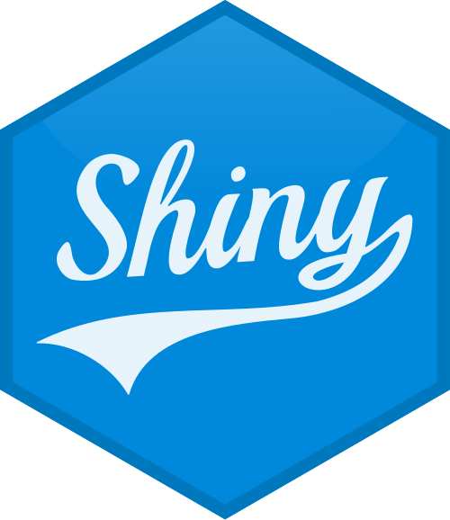

Shiny Apps
All About Shiny Apps

Introduction to Shiny Apps:
The video helped me understand how the Shiny package in R turns static R code written within R scripts into dynamic web applications. These web apps are hosted locally on your machine or on a remote server (for example, shinyapps.io). As web apps play a central role in data-driven analysis, most data scientists need to build them and work with them efficiently. It was especially interesting to me since I have always been keen on creating interactive dashboards, and Shiny is a tool that enables me to translate complex data into data visualizations easily and rapidly, maintaining the interactivity of the original data. Thanks to Shiny, no prior knowledge on web development is needed. Therefore, R users with a goal of developing apps can familiarize themselves with the required skill set of web development.
Learning Outcomes
By the end of this workshop, I was able to:
Note the Shiny application’s basic components: the UI (User Interface) and server program code, and how the two areas interact.
Insert reactive programming features within Shiny to reflect changes when user actions are performed.
Add interactivity to my data visualizations utilizing libraries such as plotly, so that I can create interactive ggplot2 graphics.
Publish my Shiny apps on platforms like ShinyApps.io or an internal server, where access to the apps is easy for others.
Integrate security into my Shiny apps using shinyManager, which will provide me the basic password protection, and in addition, help me to learn more advanced security concerning enterprise-level applications.
Key Concepts in Shiny
Shiny App Structure
Shiny apps have two main parts: the UI through which users interact with the app, and the server where you define how the app works. While UI identifies the layout and allows me to describe how users can interact with the app, the server describes the back-end, processing users’ input and developing the relevant output. In fact, one of the distinct features of Shiny is its reactive programming system, whereby the server reflects back outputs when the users interact with the UI.
Reactive Programming
Whenever there is a change in the input fields, Shiny’s reactivity comes into play. With Shiny, the app immediately updates the output without requiring a manual refresh to reflect changes in the input. For instance, when a user selects a category from a drop-down list, it automatically generates a corresponding chart with the newly aggregated values. This mechanism offers to the user an intuitive interaction with the app, which seems effortless from the observer’s side.
Interactive Data Visualizations
The Shiny package has the advantage of integrating with interactive data visualization libraries like plotly. In this section, the application of plotly took the static ggplot2 plots I generated before and transformed them into interactive charts for the viewers to pull out some specifics they are interested in. Such functionalities include pan, zoom, tooltip for discovery of tooltip data, and on-the-fly filtering, which make data exploration extraordinary.
Deployment of Shiny Apps
Therefore, once I have designed the Shiny application, the next step is app deployment. I tried out a couple of platforms, and in my research, I found ShinyApps.io, which is hosted by RStudio. I think this app is very convenient since, once deployed, users can run it from anywhere in the world by simply clicking a link on a web browser—there’s no need for them to install R or RStudio, which makes it a very time-saving way for sharing.
Security Considerations
When deploying Shiny apps that handle sensitive data, security is a key consideration. Although security functions are not built-in features in Shiny framework, the app does allow for implementation of security features. Specifically, I employed shinyManager package to offer my app with password login protection. This allows the package to sufficiently limit access to the app by users whose log in credentials are incorrect. As an application developer, I consider utilizing more advanced security platforms, such as Active Directory or OAuth, to ensure secure environment for more complex applications.
Conclusion
Shiny has been a great resource for me in converting my Vignette to Shiny. Signing into Shiny gives you direct access to my project without worrying about installing extra software. After how well my first app turned out, I am now looking to convert my projects to Shiny to take advantage of the interactive features that they offer.
Moving forward, I can do away with installing additional software by giving others direct access to my apps, and at the same time take security precautions for private data. With Shiny, I do not have to bother others to install the extra software for them to access my app. Security is a concern I can fully address. I am energized about building more Shiny apps and learning about deeper features, such as new themes, layouts, and data analysis integration, as I go.